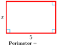
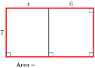

When we write an algebraic expression, we use the same operations on a variable that we would use to calculate with a specific number. Writing down the expression for a specific numerical value can help us write an algebraic expression.
Example2.21.
Alida keeps $100 in cash from her weekly paycheck, and deposits 40% of the remainder in her savings account. If Alida’s paycheck is \(p\text{,}\) write an expression for the amount she deposits in savings.
Solution.
How would we calculate Alida’s deposit if we knew her paycheck? Suppose Alida’s paycheck is $500. First she subtracts $100 from that amount to get \(500-100\text{,}\) and then she takes 40% of the remainder for savings:
How should we write "3 times the sum of \(x\) and 12"?
Answer.
\(3(x+12)\)
SubsectionNegative Numbers
The order of operations applies to signed numbers. Operations inside parentheses or other grouping devices should be performed first.
Example2.27.
Simplify \(~~4-3-[-6+(-5)-(-2)]\)
Solution.
Perform the operations inside brackets first. Simplify each step by rewriting subtractions as equivalent additions.
\begin{align*}
\amp 4-3- [-6+\blert{(-5)-(-2)}] \amp\amp \blert{-5-(-2)=-5+2}\\
=\,\amp 4-3-[\blert{-6-5+2}] \amp\amp \blert{-6-5+2=-9}\\
=\,\amp 4 \blert{-3-[-9]} \amp\amp \blert{\text{Rewrite as an addition.}}\\
=\,\amp 4-3+9 = 10 \amp\amp \blert{\text{Add from left to right.}}
\end{align*}
QuickCheck2.28.
Which operation is performed first in the expression \(6-4x\text{?}\)
Answer.
multiplication
QuickCheck2.29.
What is the first step in evaluating the expression \(2(18-x)\text{?}\)
Answer.
Subtract \(x\) from 18
Caution2.30.
When using negative numbers, we must be careful to distinguish between products and sums. In Example 2.31, note how the parentheses and minus signs are used in each expression.
Example2.31.
Simplify each expression.
\(\displaystyle 3(-8)\)
\(\displaystyle 3-(-8)\)
\(\displaystyle 3-8\)
\(\displaystyle -3-8\)
Solution.
This expression is a product: \(~3(-8)=-24\)
This is a subtraction. We follow the rule for subtraction by changing the sign of the second number and then adding: \(~3-(-8)=3+8=11\)
This is an addition; the negative sign in front of tells us that we are adding \(-8\) to \(3\text{.}\) Thus, \(~3-8=3+(-8)=-5\)
This is also an addition: \(~-3-8=-3+(-8)=-11\)
QuickCheck2.32.
What is wrong with this calculation: \(4-3+9=4-12=-8\text{?}\)
Answer.
We should subtract \(4-3\) first.
Look Closer.
When we evaluate an algebraic expression at a negative number, we enclose the negative numbers in parentheses. This will help prevent us from confusing multiplication with subtraction.
Example2.33.
Evaluate \(~2x-3xy~\) for \(~x=-5~\) and \(~y=-2\text{.}\)
Solution.
We substitute \(\alert{-5}\) for \(x\) and \(\blert{-2}\) for \(y\text{,}\) then follow the order of operations.
Helen bought \(n\) packages of tulip bulbs. If each package contains 12 bulbs, how many bulbs did she buy?
Henry bought a package of \(n\) gladiolus bulbs, then bought 12 loose bulbs. How many bulbs did he buy?
Together Karen and Dave sold 12 tickets to the spring concert. If Karen sold \(n\) tickets, how many did Dave sell?
Together Karl and Diana collected \(n\) used books for the book sale. If Karl collected 12 books, how many did Diana collect?
Greta made \(n\) dollars last week. If she worked for 12 hours, how much did she make per hour?
Gert jogged for 12 minutes. If she jogged \(n\) miles, how many minutes does it take her to jog 1 mile?
Answer.
\(\displaystyle 12n\)
\(\displaystyle n+12\)
\(\displaystyle 12-n\)
\(\displaystyle n-12\)
\(\displaystyle \dfrac{n}{12}\)
\(\displaystyle \dfrac{12}{n}\)
SubsectionLesson
Activity2.4.Order of Operations.
Follow the order of operations to simplify each expression.
\(\displaystyle 5-(+7)-3-(-2)\)
\(\displaystyle -4-(-9)-3-8\)
\(\displaystyle 7(-3)-2(-5)\)
\(\displaystyle 9-4(-6)\)
\(\displaystyle -6(-2)(-5)\)
\(\displaystyle -6(-2)-5\)
\(\displaystyle -6(-2-5)\)
\(\displaystyle -6-(2-5)\)
\(\displaystyle [-5-8]-[7-10-4]\)
\(\displaystyle -6+[(4-8)-(-9)]\)
\(\displaystyle 28-3(-12-2 \cdot 4)\)
\(\displaystyle 12-36 \div 4(9-2 \cdot 3)\)
Activity2.5.Writing Algebraic Expressions.
Neda decides to order some photo albums as gifts. Each album costs $12, and the total shipping cost is $4. Neda would like an algebraic expression that describes the total cost of ordering \(a\) albums.
\(\blert{\text{Consider some specific values for the variable:}}\)
What is Neda’s bill if she orders 3 albums? If she orders 5 albums?
Describe in words how you calculated your answers for specific values.
\(\blert{\text{Replace the specific values in your calculations by a variable.}}\)
If Neda orders \(\alert{a}\) albums, an expression for the bill is:
Let \(B\) stand for Neda’s bill, and write an equation that gives Neda’s bill, \(B\text{,}\) in terms of the number of albums she orders, \(a\text{:}\)
Megan would like to buy a kayak on sale. She calculates that the kayak she wants costs $40 less than three weeks’ salary.
Write an expression for the price of the kayak if Megan makes $280 per week.
If Megan makes \(w\) dollars per week, write an expression for the price of the kayak.
Emily bought five rose bushes for her garden. Each rose bush cost $9 plus tax.
Write an expression for the total amount Emily paid if the tax on one rose bush is $0.45.
If the tax on one rose bush is \(t\text{,}\) write an expression for the total amount Emily paid.
Activity2.6.Evaluating Algebraic Expressions.
When a company purchases a piece of equipment such as a computer or a copy machine, the value of the equipment depreciates over time. One way to calculate the value of the equipment uses the formula
where \(C\) is the original cost of the equipment, \(t\) is the number of years since it was purchased, and \(n\) stands for the useful lifetime of the equipment in years. Find the value of a 4-year-old copy machine if it has a useful lifetime of 6 years and cost $3000 when new.
For "5 dollars less than the price of 3 shirts," Delbert writes \(5-3s\text{.}\) What is wrong with his expression?
In problems 2 and 3 of Activity 2, which expression required parentheses? Why?
When we evaluate \(ab\) for \(a=6,~b=-3\text{,}\) why should we enclose \(-3\) in parentheses?
Activity2.7.Homework Preview.
Write algebraic expressions.
Boyer’s history book is 600 pages long, and he reads 20 pages per night. How many pages does he have left to read after \(t\) nights?
Kristi deposits $50 from her paycheck into savings, and then gives herself 15% of the rest for spending money. If her paycheck is \(p\) dollars, how much spending money does she get?
The area of a pyramid is one-third the product of its length, its width, and its height.
The difference of a number \(B\) and twice its reciprocal.
5. Evaluate.
\(2m(m+p)(m-p)~~~~\) for \(~m=-5~\)and \(~p=-8\)
\((z+2)(2z-1)~~~~\) for \(~z=\dfrac{-3}{4}\)
Answers to Homework Preview
\(\displaystyle 600-20t\)
\(\displaystyle 0.15(p-50)\)
\(\displaystyle \dfrac{1}{3}lwh\)
\(\displaystyle B-\dfrac{2}{B}\)
5.
\(\displaystyle 390\)
\(\displaystyle \dfrac{-25}{8}\)
ExercisesHomework 2.2
1.
The perimeter of a rectangle of length \(l\) and width \(w\) is given by
\begin{equation*}
P=2l+2w
\end{equation*}
Find the perimeter of a rectangular meeting hall with dimensions 8.5 meters by 6.4 meters.
2.
The area of a trapezoid with bases \(B\) and \(b\) and height \(h\) is given by
where \(F\) stands for the temperature in degrees Fahrenheit (\(\degree\)F). Find normal body temperature in degrees Celsius if normal temperature is \(98.6 \degree\) Fahrenheit.
Exercise Group.
For Problems 5–8, simplify by following the order of operations.
5.
\(-18-[8-12-(-4)]\)
6.
\(3-(-6+2)+(-1-4)\)
7.
\(-7+[-8-(-2)]-[6+(-4)]\)
8.
\(0-[5-(-1)]+[-6-3]\)
9.
Find each product.
\(\displaystyle (-2)(3)(4)\)
\(\displaystyle (-2)(-3)(4)\)
\(\displaystyle (-2)(-3)(-4)\)
\(\displaystyle (-2)(-3)(4)(2)\)
\(\displaystyle (-2)(-3)(-4)(2)\)
\(\displaystyle (-2)(-3)(-4)(-2)\)
10.
Use your results from Problem 9 to complete the statements:
The product of an odd number of negative numbers is .
The product of an even number of negative numbers is .
Exercise Group.
For Problems 11–14, use the order of operations to simplify the expression.
For Problems 17–22, evaluate for the given values.
17.
\(15-x-y~~~~\) for \(x=-6,~y=8\)
18.
\(p-(4-m)~~~~\) for \(p=-2,~m=-6\)
19.
\(12x-3xy~~~~\) for \(x=-3,~y=2\)
20.
\(\dfrac{y-3}{x-4}~~~~\) for \(x=-9,~y=2\)
21.
\(\dfrac{1}{2}t(t-1)~~~~\) for \(t=\dfrac{2}{3}\)
22.
\(\dfrac{x-m}{s}~~~~\) for \(x=4,~m=\dfrac{9}{4},~s=\dfrac{3}{2}\)
23.
Evaluate each expression for \(x=-5\text{.}\) What do you notice?
\(\displaystyle \dfrac{-3}{4}x\)
\(\displaystyle \dfrac{-3x}{4}\)
\(\displaystyle -0.75x\)
Does \(\dfrac{-8}{5}x=\dfrac{-8}{5x}\text{?}\) Support your answer with examples.
24.
Which of the following are equivalent to \(-\dfrac{4}{9}x\text{?}\)
\(\displaystyle \dfrac{4}{9}(-x)\)
\(\displaystyle \dfrac{-4x}{-9}\)
\(\displaystyle \dfrac{-4}{9x}\)
\(\displaystyle \dfrac{-4x}{9}\)
\(\displaystyle \dfrac{-4}{9}(-x)\)
Exercise Group.
For Problems 25–26, write an algebraic expression for area or perimeter.
25.

26.

27.
Salewa saved $5000 to live on while going to school full time. She spends $200 per week on living expenses.
How much of Salewa’s savings will be left after 3 weeks?
Describe in words how you calculated your answer to part (a).
Fill in the table below.
Number of weeks
\(2\)
\(4\)
\(5\)
Calculation
\(\hphantom{0000}\)
\(\hphantom{0000}\)
\(\hphantom{0000}\)
Savings left
\(\hphantom{00}\)
\(\hphantom{00}\)
\(\hphantom{00}\)
Write an equation that gives Salewa’s savings, \(S\text{,}\) after \(w\) weeks.
28.
To calculate how much state income tax she owes, Francine subtracts $2000 from her income, and then takes 12% of the result.
What is Francine’s state income tax if her income is $8000?
Describe in words how you calculated your answer to part (a).
Fill in the table below.
Income
$5000
$7000
$12,000
Calculation
\(\hphantom{0000}\)
\(\hphantom{0000}\)
\(\hphantom{0000}\)
State tax
\(\hphantom{00}\)
\(\hphantom{00}\)
\(\hphantom{00}\)
Write an equation that gives Francine’s state income tax \(T\text{,}\) if her income is \(I\text{.}\)
Exercise Group.
For Problems 29–32,
Choose a variable for the unknown quantity and write an algebraic expression.
Evaluate the expression for the given values.
29.
Three inches less than twice the width
The width is 13 inches.
30.
Twenty dollars more than 40% of the principal
The principal is $500.
31.
$8 times the number of children’s tickets subtracted from 150
There are 83 children’s tickets
32.
One-third of $50 less than the profit
The profit is $500
Exercise Group.
For Problems 33–40, write an algebraic expression.
33.
The oven temperature started at \(65 \degree\) and is rising at \(30 \degree\) per minute. Write an expression for the oven temperature after \(t\) minutes.
34.
Luisa’s parents have agreed to pay her tuition ($800 per year) plus half her annual living expenses while she is in school. Write an expression for the amount her parents will pay if Luisa’s annual expenses are \(a\) dollars.
35.
Mildred canned 80 pints of tomatoes. She kept some for herslf and divided the rest equally among her four daughters. If Mildred kept \(M\) pints, write an expression for the number of pints she gave each daughter.
36.
Moira’s income is $50 more than one-third of her mother’s income. Write an expression for Moira’s income if her mother’s income is \(I\text{.}\)
37.
Otis buys 200 pounds of dog food and uses 15 pounds a week for his dog Ralph. Write an expression for the amount of dog food Otis has left after \(w\) weeks.
38.
Renee receives $600 for appearing in a cola commercial, plus a residual of $80 each time the commercial is aired. Write an expression for Renee’s earnings if the commercial plays \(t\) times.
39.
Digby bought scuba diving gear by making a $50 down payment and arranging to pay the balance in ten equal installments. If the total cost of the gear is \(C\) dollars, write an expression for the amount of each installment.
40.
Each passengers and three crew members on a small airplane is allowed 35 pounds of luggage. Write an expression for the weight of the luggage if there are \(x\) passengers.
Exercise Group.
For Problems 41–42,
Write an algebraic expression.
Make a table for the expression showing at least two positive values for the variable and two negative values.
41.
The ratio of a number to 4 more than the number
42.
The sum of \(a\) and 5, times the difference of \(a\) and 5